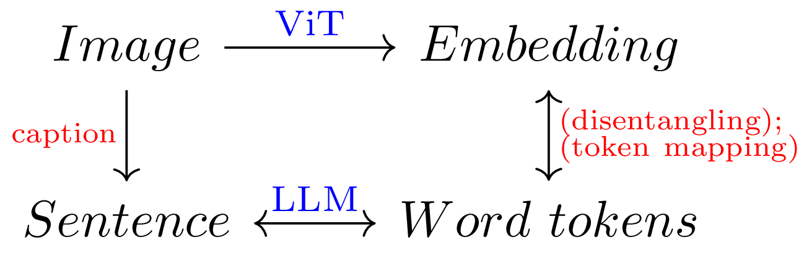
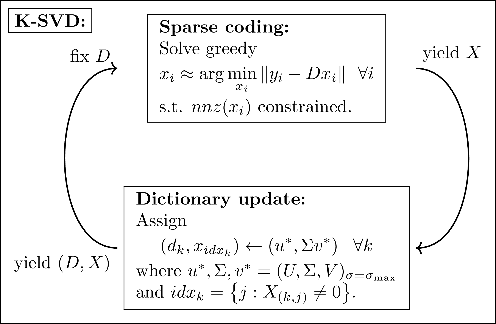
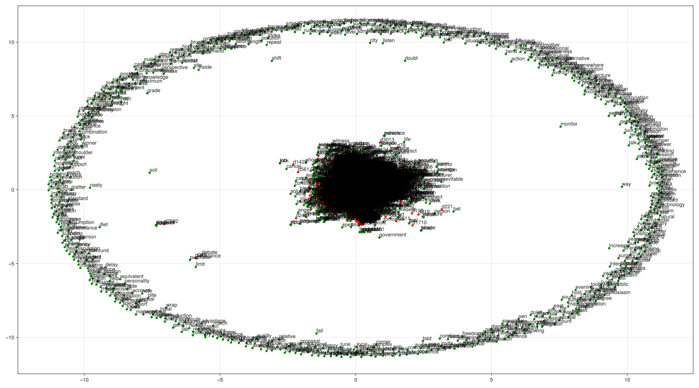
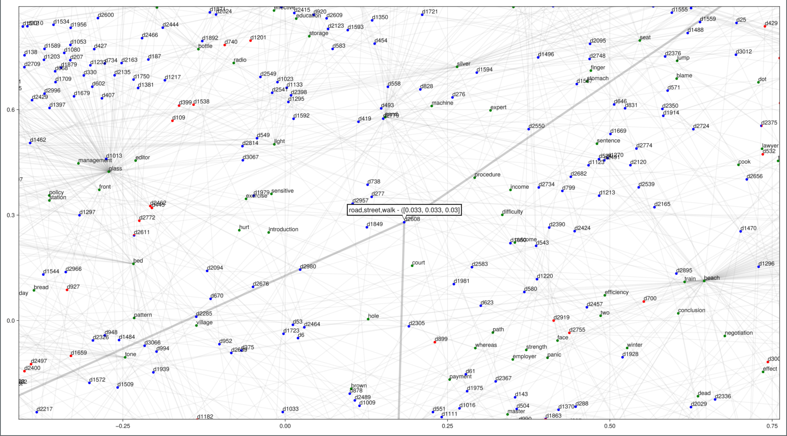
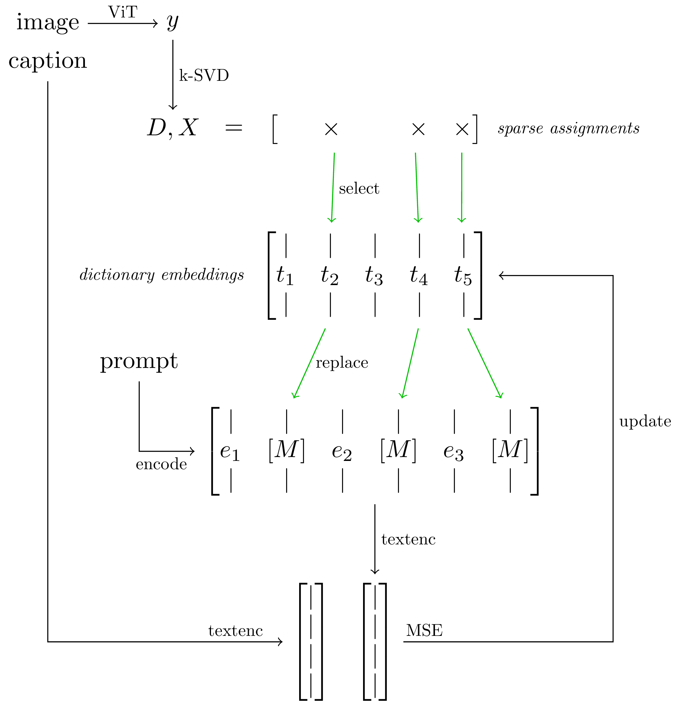

Dictionary Learning for Disentangling Concepts in Vision Transformers.
Table of Contents
- 1. Introduction.
- 2. Dictionary Learning with the K-SVD algorithm.
- 3. Creating the token mapping.
- 4. Experimental results
- 5. Conclusion and current limitations.
- 6. Bibliography.
- 7. Appendix
Abstract: Vision Transformers produce high-quality embeddings useful for many downstream tasks – however both their embeddings and inner workings are typically difficult to interpret. However, by disentangling the conceptual components of the data we can hope to gain additional insight; however finding disentangled human-aligned has been shown to be difficult in the past. In this work we propose using the k-SVD algorithm together with captioned image datasets to tackle this problem. We present a new highly optimized implementation of the k-SVD algorithm that scales to large datasets with millions of samples and can be scaled to many compute nodes. Then we discuss three ways how we can map the resulting dictionary elements from the k-SVD algorithm to natural language word tokens in a “faithful” way.
This work is still in progress, and reported here are some of the results obtained while working on this in Fall 2023.
1. Introduction.
The Transformer architecture has been successfully deployed for a variety of applications. However, as with other machine learning methods, its reliability is not guaranteed. Reliability can for example be measured as a combination of in-distribution performance, performance under distributional shift, out-of-distribution detection and/or performance, uncertainty calibration, and robustness to adversarially chosen input perturbations.
We hypothesize that for robustness and generalizability, the model must learn a faithful representation of the world, which goes beyond mere statistical inference.
Humans similarly have a model of the world, and although it is generally not easy to write down, we have developed natural language as a way to communicate information between each other. It is therefore natural to wonder whether the models potentially emerging in large Transformer networks are or can be aligned with a human model of the world.
Let us consider the special case of Vision Transformers. Typically, models are trained to produce a sequence of high-dimensional embeddings, which can serve as inputs to downstream tasks like classification. It is therefore clear that these embeddings have a variety of information stored in them.
The goal is now try to “disentangle” these embeddings in order to provide a interpretable/human-aligned/monosemantic view of the embeddings, which stay faithful to the original content of the embedding (but might sacrifice some of the detailed information). This goal of “disentanglement” from a “block of data” goes back to Independent Component Analysis (ICA), and was picked up again in the context of machine learning (see e.g. beta-VAE (Higgins et al. 2017)). “Disentanglement” here is defined as having a set of components that are both conditionally independent and align with a notion of human interpretability. However, an important result in 2020 proved that without further assumptions there is an infinite set of components which satisfy the conditional independence property, so requiring this alone is not enough to get interpretable components for free (Locatello et al. 2019).
However, in this work we propose two extra conditions with which we aim to overcome the theoretical concerns:
- small number of “active” concepts, and
- encodable using natural language.
In the next sections we first discuss some theoretical details for both conditions, and then describe how we actually implement each condition, i.e through dictionary learning/the k-SVD algorithm (Section 2) and token assignment (Section 3).
1.1. Small number of “active” concepts.
The first condition is motivated easily. It turns out to be easy to project a dataset onto a new basis of orthogonal vectors, i.e. “statistically independent concepts”, so that each datapoint is a sum of these orthogonal vectors – this is indeed just the singular value decomposition (SVD), i.e. \(Y = U \Sigma V^\top\) where each column of \(Y\) is a datapoint, and each column of \(U\) is a “concept vector”.
However, in this case each datapoint is constructed of an “infinite sum” of concept vectors, whereas we believe that any data sample only has a relatively small number of active concepts. Further, the SVD is designed to find something like “Principal Components”, which in our language would translate to abstract concepts that are represented in the majority of datapoints. However, we want neither of these. Instead, we would like to represent each datapoint \(y\) for example as a sum \(\sum_{j \in \mathcal{J}} \vec{d}_j \cdot \lambda_j\) where \(|\mathcal{J}|\) is small. In other words, we try to write our data matrix \(Y = [y_1 \dots y_{|Y|}]\) as a product of dictionary vectors \(D = [d_1 \dots d_{|D|}]\) and a sparse assignment matrix \(X\) such that \(Y \approx D X\).1
It turns out that this problem has been studied previously, and is known as “Dictionary Learning”. A popular algorithm for dictionary learning is the “K-SVD” algorithm (Aharon, Elad, and Bruckstein 2006), which essentially alternates between updating the set of dictionary vectors and updating the assignment matrix. We will go into more details in Section 2.
Recently, it has also been proposed to use a Sparse Autoencoder, e.g. as presented in (Bricken et al. 2023). We briefly compare the approaches below.
1.2. Natural language encoding.
- The additional sparsity constraint is enough to overcome the theoretical problems brought up by Locatello et al. (2019).
- However, it remains unclear whether this is enough for extracting dictionary or concept vectors with the kind of human-aligned interpretability that we are looking for.
- Indeed, even if they were sufficiently aligned, it is not clear how we can map the concept vectors to natural language representations, or how we can test whether a language-to-embedding mapping is “faithful” or correct in some sense.
- However, we believe that the recently gained availabily to large language models (LLMs) gives us a way to overcome these problems.
Proposition 1: Consider the setup presented in Fig. 1, and consider that the disentangling method works well in the sense described in the previous section. Then, we consider a token mapping “faithful” if the diagram in Fig. 1 commutes.

Figure 1: Commutative diagram showing the flow of semantic information. Given captioned images, a ViT, an LLM, and a disentangling method, we can therefore create a token mapping.
Being able to “score” a given token mapping now may make it possible to actually construct the token mapping. We go into more detail on the approaches in Section 3.
2. Dictionary Learning with the K-SVD algorithm.
In this section we first discuss some theoretical properties and considerations of the K-SVD algorithm, and then discuss the contributions we have made and published in the KSVD.jl package. Then we will briefly discuss the K-SVD algorithm versus using a Sparse Autoencoder.
2.1. The algorithm, and theoretical considerations.
The K-SVD algorithm solves the problem of dictionary learning outlined above, namely finding a matrix decomposition \(Y \approx D X\) where \(\mathrm{size}(D, 2) > \mathrm{size}(D, 1)\) (i.e. an “overcomplete” dictionary), and \(X\) is sparse. It can be understood as a generalization to the k-means algorithm, but allowing any datapoint to be associated with multiple centroids.
Typically, iterative dictionary learning algorithms alternate between two steps:
- Sparse coding:
- Given a fixed dictionary, for each data sample find a small subset of dictionary vectors and factors such that \(y_i \approx \sum_{j \in \mathcal{J}} x_j \cdot d_j\). Note that this is a non-convex problem (and indeed NP-hard), and typically heuristics like greedy search are used. Typically used algorithms are (Orthogonal) Matching Pursuit, Basis Pursuit, or FOCUSS. In our implementation, we use Matching Pursuit.
- Dictionary update:
- Given a coding matrix \(X\), we can again update the dictionary elements. Several approaches exist – for example, a simple gradient descent based approach can be used to optimize \(\min_D \|Y - DX\|\), where \(X\) stays fixed. However, Aharon, Elad, and Bruckstein (2006) propose updating each dictionary element independently by considering all the data points that are “using” a given dictionary element and then replacing the dictionary element with the dominant singular vector of the these datapoints. Note that this simultaneously updates the values in \(X\), which most other algorithms do not.

Figure 2: An overview of the K-SVD algorithm.
This algorithm has exceptionally few hyperparameters – indeed, it is sufficient to choose a number of dictionary elements, and a cutoff threshold for sparse coding.2 A mere two hyperparameters! Further, utilizing the (truncated) svd algorithm typically leads to fast convergence and good computational efficiency, since the svd is theoretically “optimal” in some sense, and heavily optimized.
A note on convergence.
It is noteworthy that K-SVD has a convergence guarantee only to a local minimum, and only if the sparse coding step is solved optimally. However, as is somewhat typical for machine learning, we have some hope that for large enough datasets the loss function becomes practically convex, so that the algorithm converges to a global minimum.
2.2. KSVD.jl : A highly optimized K-SVD implementation.
Note: While we believe the timings described in this section to be roughly correct, we have to run additional tests to make sure we also achieve the same convergence.
Bricken et al. (2023) mention the K-SVD algorithm, however deem it computationally infeasible to apply to large datasets with millions (or billions) of samples.
And indeed, current implementations seem not up to the task; the implementation available as sklearn.decompositions.MiniBatchDictionaryLearning, which extensively leverages numpy and joblib, takes over 3 minutes for ten iterations on a dataset with ten thousand elements (despite multi-threading).
For this reason, we present KSVD.jl, an implementation of the K-SVD algorithm in the Julia programming language (Bezanson et al. 2017).
This implementation outperforms sklearn’s implementation by about \(50\times\) when computing the same problem, can gain an additional \(2\times\) by reducing the precision from Float64 to Float32, and can be scaled across many compute nodes with almost linear speedup improvements3.
That means if, for example, eight compute nodes are available, we can expect a speedup of \((50 \cdot 2 \cdot 8)\times = 800\times\) for moderate to large datasets.
Further, KSVD.jl also employs several algorithmic modifications that, to the author’s knowledge, lead to faster convergence given the same number of compute operations.4
This speedup has been achieved through extensive benchmarking and optimization of the code, including
- careful adjustments to the execution order and small algorithmic adjustments,
- single-core optimizations like aggressive buffer preallocations, exploiting cache locality, improving the memory layout, and reducing memory movements,
- careful multi-threading using small batch updates with frequent cross-communication implemented with Julia’s efficient task scheduling,
- a custom multi-threaded dense-sparse matrix multiplication implementation (
ThreadedDenseSparseMul.jl), - pipelined GPU-offloading for large matrix multiplications (currently unused in the fastest version),
- a custom distributed executor allowing to spread the computation over many compute nodes.
Over-the-thumb estimation of computational requirements for large dataset.
To illustrate the (theoretical) execution times on a large dataset, let us estimate the time to compute 10 and 100 iterations of the K-SVD algorithm on embeddings from the OpenCLIP dataset, which has 400 million samples.
We will consider having a cluster with 8 nodes and 64 cores each, and compute in Float32 precision.
As a datapoint, let’s consider measurements from my 16 thread (8 core) Intel i7 mobile processor, which achieves 10 iterations on 800’000 samples in about 120 seconds. Using the setup above, we have about 32 times more compute resources and a 500 times larger problem, which yields an estimated runtime of \(120\text{sec} \cdot \frac{500}{32} = 1875\text{sec} \approx 0.5\text{h}\), and similarly \(5\text{h}\) for 100 iterations etc.
3. Creating the token mapping.
In the previous section, we saw how we can extract “concept” or “dictionary” vectors that explain the embeddings generated by a ViT. Crucially, we assume for now that each dictionary vector can be mapped to a human concept. This is a strong hypothesis, as it requires (i) that the introduction of the sparsity constraint overcomes the concerns mentioned in Locatello et al. (2019), and that (ii) the k-SVD algorithm does a sufficiently good job at solving the problem.
However, even in this case it is not trivial to actually find a way to assign the human concept. We propose several ways how this can be achieved nonetheless. All ways rely on having captioned images, i.e. dataset of pairs connecting a natural-language description and an associated image. In particular, we work with the sbucaptions dataset (Ordonez, Kulkarni, and Berg 2011), which contains about 800 thousand captioned images, see e.g. https://vislang.ai/sbu-explorer. Other datasets include coco (600k), conceptual captions (3M and 12M), laion datasets (400M and 5B), and others.
The approach for all the following methods is always similar:
- Only the images are fed to a ViT model, and a single embedding vector per image is constructed (usually 768 or 1536 dimensional), yielding an embedding matrix like \(Y \in \mathbb{R}^{768 \times n}\).
- Dictionary learning (e.g. with the k-SVD algorithm) is used to rewrite \(Y\) as \(Y \approx D X\) with \(X\) sparse and \(D\) overcomplete.
- The captions are processed somehow, e.g. by computing an embedding or checking them for certain concept nouns. The result constitutes a kind of label.
- These labels are used to assign concepts to each dictionary element in \(D\).
Notice that these steps roughly model the diagram in Fig. 1.
We will now go over some concrete examples over how this can be achieved. We denote approaches that have been implemented in some form of proof-of-concept, and which have not.
3.1. Correlating word occurrences with sparse assignments.
We first present an approach not reliant on LLMs at all, and instead works by correlating \(X\) with word occurrences in the captions. We start by considering a list of English words, e.g. nouns from here. For each caption, we then check if the noun is contained in the caption, yielding a occurrence matrix \(O \in \left\{ 0, 1 \right\}^{n_{\rm words} \times n_{\rm captions}}\).
Recall now that we have \(X \in \left\{ 0, 1 \right\}^{n_{\rm dictionary} \times n_{\rm words}}\) and let \(X_{01} \in \left\{ 0,1 \right\}^{n_{\rm dictionary}\times n_{\rm captions}}\) be the “indicator” matrix of \(X\), i.e. \(X_{01}[i,j] := (X[i,j] \neq 0)\). Then, we can compute the correlation between \(O\) and \(X_{01}\); informally, if a certain dictionary element has been selected for a set of images, and all the images’ captions contain the word “dog”, then the dictionary concept is at least statistically related to the concept “dog”.
More precisely, let \(C = {cor}(O, X_{01}) \in \mathbb{R}^{n_{\rm words} \times n_{dictionary}}\) be this correlation, reduced along the images/captions. Then, for each dictionary element we can assign e.g. the top-1 or top-3 most correlating words by simply finding the maximum correlation column-wise. Some more discussed on correlation magnitudes is in Section 7.1 (Appendix).
(D, X) = deseralize("sbu_captions_embeddings_ksvd.jls") X_01 = (X .!= 0) words = readlines("english-nouns.txt") captions = map(lowercase, readlines("captions.txt")) O = [occursin(word, caption) for word in words, caption in captions] n = size(X_01, 2); @assert size(X_01, 2) == size(O, 2) C = cor(O, X_01; dims=2) word_indices_per_dict_element = [ sortperm(col; rev=true)[1:3] # indices with max correlation for col in eachcol(C) ] # e.g. show words for first dictionary element @info words[word_indices_per_dict_element[1]]
[ Info: ["boat", "ship", "sail"]
Using this strategy also gives us a natural way to plot the relations we have found. Let us remove all correlations in \(C\) that are not in the top-3 column-wise. Then, we immediately have an adjacency matrix of a bipartite graph, where the one set of nodes are the words, and the other are the dictionary elements. We can now use classical graph layouting techniques to draw the resulting connections, e.g. through modeling connections as forces, or using spectral approaches.

Figure 3: The resulting graph with a spring layout. The words around the outside are all words that don’t have any edges.

Figure 4: A zoomed in view of the figure above. A single dictionary element is associated with the words “road”, “street”, and “walk”, with correlations \(\approx0.033\) each.
In the future we would like to pull up images associated with a dictionary vector.
3.1.1. Limitations:
- currently no proper scoring method
- correlations often low (\(< 0.1\))
- currently “air” and “hair” etc are assigned to the same caption.
- currently only nouns, problem with verbs/adjectives is that they are commonly conjugated.
- not clear whether
3.2. Minimizing semantic distance between image caption and list of descriptive tokens.
The previous approach was free of any deep learning. Generating labels through simply checking word \(\in\) caption can be very noisy, both due to not modeling any grammar (e.g. declined nouns, etc), and not capturing any semantics.
However, the recent emergence of NLP modeling gives us more tools to deal with the semantic meaning of the captions. In particular, we can try to generate a “bullet point description” from the ViT embeddings and then minimize the semantic distance of this description to the caption in an embedded space.
More precisely, consider for now the case that each dictionary element has an assigned word token. Further, consider a model that computes an embedding for any text input (a relatively common type of LLM). This gives us a simple way to score any mapping from dictionary elements to tokens, and the token assignment problem reduces to a search problem.
We propose two ways to deal with this search problem – one directly trying to find tokens in the token embedding space, and one using greedy search.
3.2.1. Finding tokens by optimizing in the token embedding space.
Given a gradient, we would like to use it to find tokens to assign to dictionary elements. This method lets us use the gradient by chooising dictionary embeddings directly in the space of token embeddings and using sparse assignments to choose subsets of active dictionary embeddings.
Let us denote the text encoding model as \(\mathrm{textenc}\), which takes a sequence of token embeddings, and produces an embedding, i.e. \(\mathrm{textenc}: {Sequence}(\mathbb{R}^e) \rightarrow \mathbb{R}^e\). (The token embeddings are typically stored as a lookup table with random initialization, although they can also be the result of optimization).
We can now try to assign tokens for each dictionary element as follows:
- We create a new matrix of randomized dictionary embeddings, i.e. a random vector for each dictionary element.
Then, we create a placeholder prompt, e.g.
An image of an object characterized by: - [MASK] - [MASK] - [MASK] ...This prompt is encoded into a sequence of embeddings (as is typical).
- Now we consider an input image-caption tuple, and the corresponding sparse dictionary assignments for the image given by \(X\). Using these assignments, we pick the corresponding embeddings from the matrix from step 1, and insert them into the prompt embedding sequence in step 2, essentially replacing the mask tokens by our own token.
- Then we process the new sequence of token embeddings with \(\mathrm{textenc}\), and compare the result with calling \(\mathrm{textenc}\) on the caption directly. We can compute e.g. a MSE score, and use the gradient to update the active token embeddings from step 1.

Figure 5: An overview over the token optimization in embedding space.
The goal here is that we can use the gradient to directly optimize the dictionary embeddings in the token embedding space. Upon convergence, we would extract the natural language token from the dictionary embeddings by finding the nearest neighbor token embedding and using that token.
However, it turns out that in our experiments this approach didn’t seem to converge at all. We believe this is because models are not built to be “robust” to changes in the token embeddings at all, since these are typically fixed. Therefore, the gradient information for the dictionary embeddings might be very poorly behaved.
For this reason we turn to a more basic approach in the next section.
3.2.2. Finding token embeddings through greedy search.
In this setup we adapt a similar approach to the previous section, however we do not rely on the gradient for optimization. Instead, we simply try to directly set the dictionary embeddings to token embeddings.
The algorithm works as follows:
- Start by reducing the sparse assignments only to the “maximum” assignment, and use a prompt with only one mask token.
- Then, for every image-caption-sparse-assignments triplet, try out every token the tokenizer supports, and use its embedding to replace the mask token’s embedding.
- Keep the token that minimizes the mean-squared error (MSE) between the caption encoding and the modified prompt encoding computed over the entire dataset.
- Add a second sparse-assignment and mask token, and repeat as above. Continue until every sparse assignment is processed.
We have had some success with this, but not processed properly yet.
3.3. Dictionary learning on a combined (caption-embedding \(\cup\) image-embedding) dataset.
Another way of mapping dictionary elements to natural language is by computing the k-SVD on a joint dataset that includes both image- and caption-embeddings. (The two embedding models are assumed to be trained jointly e.g. in a CLIP fashion.)
Then, each dictionary vector can be mapped back to captions, which can be analyzed for their shared “concepts”.
This approach has not been implemented yet, but it seems like a promising direction that is easy to implement.
4. Experimental results
We have many ad-hoc plots, e.g. for the quality of the k-SVD, results from the various token-mappings, but they’re not yet cleaned up to put here, and I need to regenerate some datasets (due to a race condition in the data processing) before I can trust the results… Stay tuned!
5. Conclusion and current limitations.
The current setup assumes that the sparsity constraint is enough to produce dictionary vectors that only need to be aligned downstream. However, it’s not clear that this is true. Indeed, it’s quite likely that performance would be improved if the token mapping could somehow be included in the disentangling step. This could perhaps be done by propagating a gradient back from the LLM setup and using it in the dictionary learning, which would perhaps integrate better with the Sparse Autoencoder. However, this is currently out of scope, but would certainly make a good next project.
6. Bibliography.
7. Appendix
7.1. Correlation patterns
When computing the correlations between word occurrences and dictionary assignments as described in 3.1, it is interesting to see if dictionary elements correlate with only few, or many words. Typically we find that for any dictionary element a small number of words clearly stand out by having a higher correlation than the others. Histrograms showing this are depicted below. However, we also note that the correlation is typically still low, e.g. \(< 0.1\) for many of the highest-correlating words.
┌ ┐
[-0.02, -0.01) ┤▎ 3
[-0.01, 0.0 ) ┤█████████████████████████████████ 1 017
[ 0.0 , 0.01) ┤████████████████▏ 494
[ 0.01, 0.02) ┤▎ 7
[ 0.02, 0.03) ┤▏ 1
[ 0.03, 0.04) ┤▏ 1
[ 0.04, 0.05) ┤ 0
[ 0.05, 0.06) ┤ 0
[ 0.06, 0.07) ┤▏ 1
[ 0.07, 0.08) ┤ 0
[ 0.08, 0.09) ┤ 0
[ 0.09, 0.1 ) ┤▏ 1
└ ┘
Frequency
┌ ┐
[-0.005, 0.0 ) ┤█████████████████████████████████ 1 265
[ 0.0 , 0.005) ┤██████▎ 234
[ 0.005, 0.01 ) ┤▌ 19
[ 0.01 , 0.015) ┤▎ 4
[ 0.015, 0.02 ) ┤▏ 2
[ 0.02 , 0.025) ┤ 0
[ 0.025, 0.03 ) ┤ 0
[ 0.03 , 0.035) ┤▏ 1
└ ┘
Frequency
┌ ┐
[-0.01 , -0.005) ┤▎ 7
[-0.005, 0.0 ) ┤█████████████████████████████████ 1 127
[ 0.0 , 0.005) ┤██████████▏ 343
[ 0.005, 0.01 ) ┤▊ 29
[ 0.01 , 0.015) ┤▍ 11
[ 0.015, 0.02 ) ┤▎ 5
[ 0.02 , 0.025) ┤▏ 1
[ 0.025, 0.03 ) ┤▏ 1
[ 0.03 , 0.035) ┤ 0
[ 0.035, 0.04 ) ┤▏ 1
└ ┘
Frequency
Footnotes:
Note that having a linear dependence of \(Y\) wrt \(D\) is a design choice, and one may also consider more nonlinear relations. However, for tractability we restrict ourselves to the linear setting.
Alternatively, we can specify a maximum number of dictionary elements per data sample.
Unlike the previous two numbers, this hasn’t been properly tested yet.
A more detailed study on this is to follow.